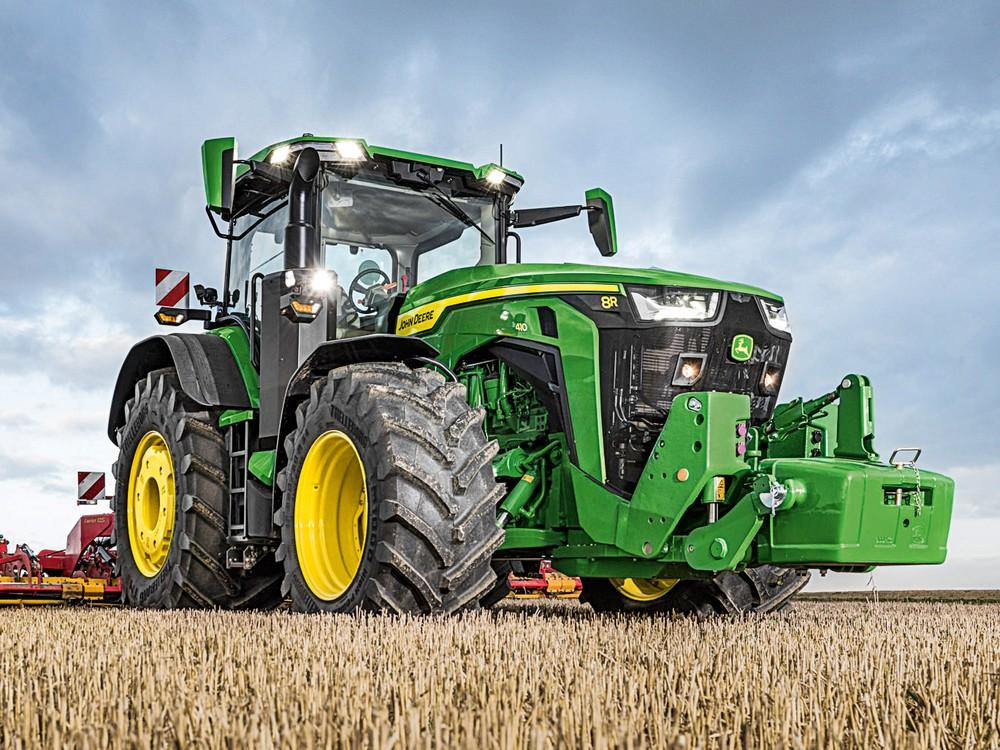
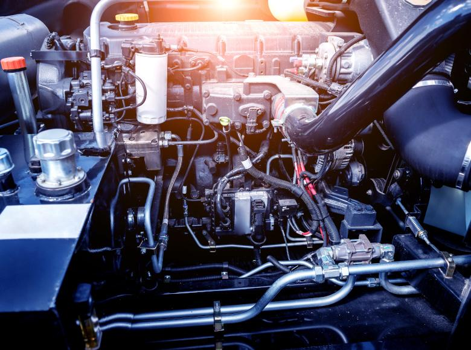
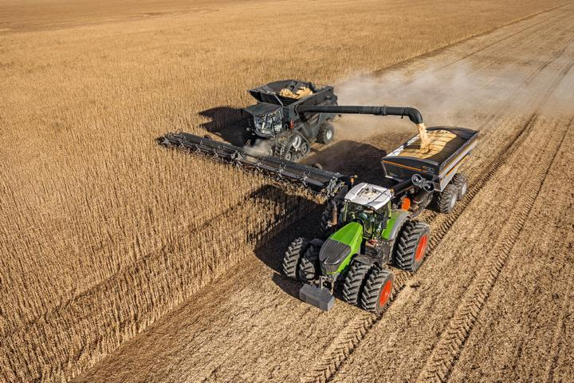
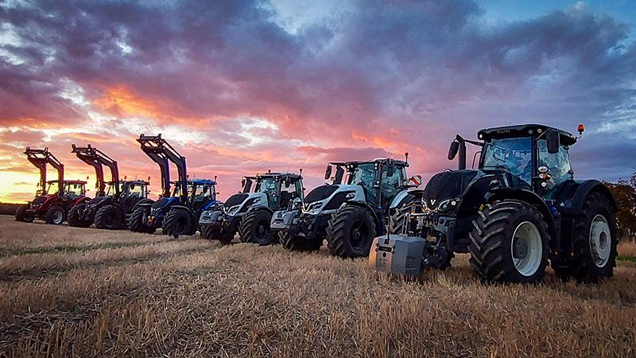

КомпФорт предлагает полный комплекс услуг по программной модернизации сельскохозяйственной техники. Мы повышаем эффективность, производительность и надежность современных машин, используя современные инженерные решения.
Профессиональная настройка электронного блока управления позволяет увеличить мощность двигателя, повысить крутящий момент, снизить расход топлива и раскрыть потенциал техники без вмешательства в конструкцию двигателя.

Отключение системы рециркуляции отработавших газов устраняет образование нагара, уменьшает нагрузку на двигатель, повышает стабильность работы и продлевает ресурс техники.

Программное отключение сажевого фильтра позволяет полностью исключить процессы принудительной регенерации, избавиться от ошибок DPF и сохранить стабильную работу двигателя даже при интенсивной эксплуатации техники.

Индивидуальная настройка нескольких электронных систем одновременно позволяет добиться максимальной эффективности, снизить эксплуатационные расходы и адаптировать технику под реальные условия эксплуатации.